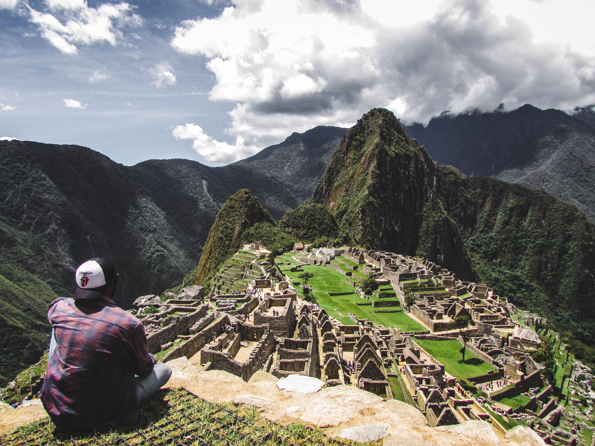
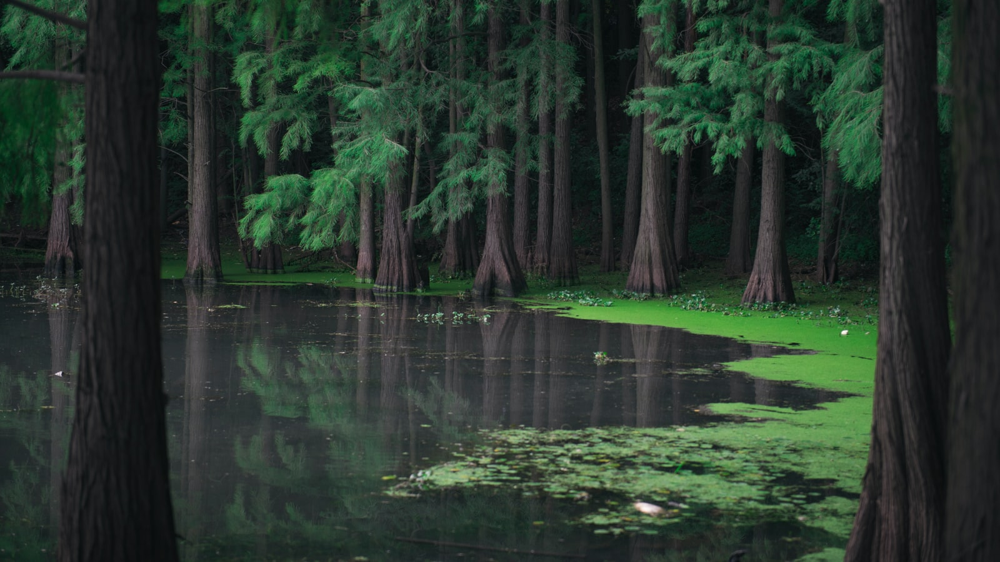

And lastly, this one.
There is no exquisite beauty…without some strangeness in the proportion.
In the spring, you should smell like dirt.
I like this place and could willingly waste my time in it.
How can you travel to the ends of the world, and not enjoy the views?
From California to New York Island, this land was made for you and me.
If Nature has taught us anything, it is that the impossible is probable..
Oh yeah, it’s that good. See for yourself.
Beautiful things don’t ask for attention.
Colors are the smiles of Nature.
Look at the forest creature; then you will understand the Nature everything better.
All I need is a few days at the beach.
We are letting Nature take its course.
Call of the wild!.

Wild JunketS. As we Travel.
Every sunset is an opportunity to reset.
There’s no Wi-Fi in the forest, but I promise you’ll find a better connection.
Behind the clouds is the sun still shining.
Beautiful things don’t ask for attention.
Good clean fun in the dirt.
One-touch of Nature makes the whole world kin.
The sound of Nature is delightful. Everyone Loves.
